두바이 여행기 (2011년)
게시: 2017-08-21T21:23:15+09:00
6년전에 출장으로 두바이에 한달 정도 다녀온 적이 있었습니다.
1. 두바이 사람들과 일
휴일에 (여기는 금토가 휴일이랍니다) 두바이 시내를 지하철 및 시내 버스를 타고 그냥 막 돌아다녀 보았습니다.
그런데, 전철이나 버스에서 두바이 사람은 거의 못본 것 같아요. 대부분 인도인 또는 필리핀 사람들이고, 유럽계 사람들이 좀 섞여 있는 정도였습니다.
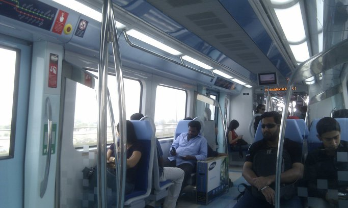
(대부분 인도-파키스탄 내지는 동남아 분들 같았습니다.)
두바이 지사에 출근하고 나서 더 놀랐습니다. 여기서 현지 고위 매니저인 오스트리아 여자분과 그 밑의 하위 매니저인 크로아티아 남자분과 커피 한잔 하면서 미팅을 했는데, 그때 들은 이야기에 따르면 여기 두바이 지사에는 두바이 국적인이 전혀 없답니다.
이유는 2가지인데, 하나는 두바이 사람들은 주로 공무원이나 은행 쪽에서 일을 구하기 때문이고, 또 아랍 사람들의 대학 교육은 주로 코란 경전 같은 인문학 쪽에만 치중해 있어서 IT 쪽과는 맞지 않는다고 합니다.
이야기를 더 들어보니, 원래 여기에 설립되는 회사들은 모두 두바이 시민을 의무적으로 10%인가 고용해야 하는데, 이렇게 고용된 사람들은 일도 별로 열심히 하지 않을 뿐더러, 아예 출근조차 하지 않는 경우도 꽤 있다고 합니다. 그래도 월급은 나가야 하기 때문에, 여기 회사들은 그런 의무 고용을 일종의 '세금'으로 생각한다고 합니다.
다만 지사가 위치한 두바이 internet city라는 곳은 자유 무역지대라서, 그런 의무 고용 조항이 없대요. 그래서 결국 두바이 지사에는 두바이 사람이 전혀 없답니다.
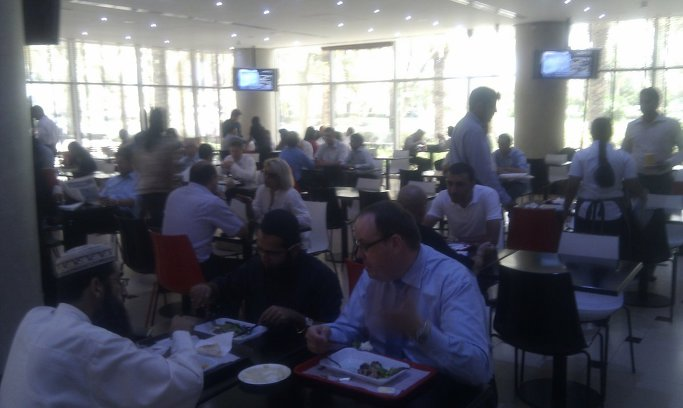
(두바이의 평범한 구내 식당... 여러 회사가 그냥 공동으로 쓰는 식당이고, 푸드 코트 형태에요.)
사무실 내에는 유럽계가 반, 그리고 인도 계열이 반 정도입니다. 이집트 사람들이 약간 있고요. 공통점은 모두 석유가 안나는 나라 사람들이라는 것이지요. 가끔 사우디 출신 사람도 있다는데, 재미있는 경험은 사우디 출신의 어떤 여대생 구직자을 면접할 때였답니다. 면접장에서 너무 눈에 띄게 불안해하길래, 왜 그렇게 불안해 하느냐고 물어보니 대답이...
'가족 이외의 남자들과 자기 혼자서 한방에 있는 것이 이번이 처음이다'
2. 음식
간단히 결론을 내리겠습니다. 중동 음식 별로 맛 없습니다. 한마디로 하면 아랍 음식이라는 것은 없고, 주로 레바논 음식 또는 이란 음식이 주랍니다. 둘다 케밥 종류가 대세이고, 다양하지는 않습니다. 음... 제가 둘다 먹어 보았는데 둘다 별로입니다. 굳이 고르라면 레바논 음식이 좀더 맛있었습니다.
주로 케밥처럼 꼬치구이한 고기를 얇은 피타 빵 (난 빵 같은 것)에 싸서 먹던가 뭐 그런 모양인데, 크게 별 맛은 없어요. 다만 위암이 걱정될 정도로 고기 겉을 태워 먹는 것이 불안했습니다. 특히 레바논식 피클이나 레바논식 잠두콩 스튜는 왜 그리 짠지... 한 1주일 분 소금을 한끼에 다 먹은 것 같았습니다.
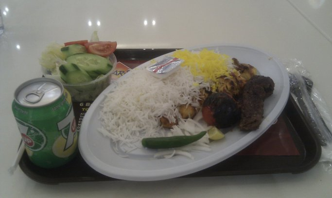
(이건 이란 음식... 거의 15,000원짜리인데... 맛은 별로.... 짐작하시다시피 저 쌀밥은 안남미고, 그 위에 노란것은 샤프란입니다. 저 까맣고 둥근것은 뭐냐고요 ? 토마토 구운 겁니다.. 대체 왜 토마토를 태워먹을까요 ? )
여기도 중국음식점이나 (미국식 중국집이더군요) 서브웨이 샌드위치, 버거킹과 맥도날드 꽤 눈에 많이 띕니다.
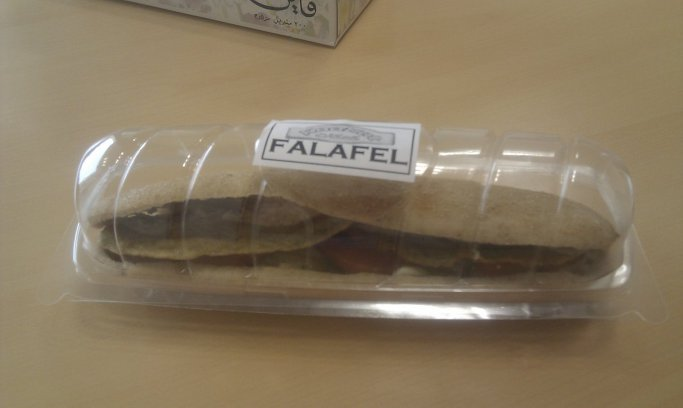
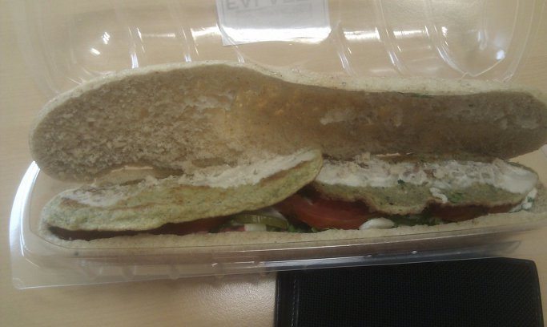
(펠라펠이라고, 콩반죽을 튀겨 만든 오뎅 비슷한 것을 넣은 샌드위치입니다. 회사 사무실 입구에서 인도네시아 계통 아주머니가 가판대를 설치하고 파는 것인데 2,700원 정도입니다. 고기가 들어간 샌드위치는 약 5,000 ~ 6,000원 해요.)
따라서 점심시간이라고 사무실이 비고 그런 일은 별로 없습니다. 대개는 1시~3시 사이 편한 시간에 그냥 각자 먹고 오는 모양이에요. 제 등뒤에서 사람들이 회의하는 이야기가 들렸는데, 한명이 점심이나 먹으면서 더 이야기할까 ? 하니까 다른 사람이 '어 난 이미 먹었어'라며 거절하더군요. 나중에 거기에 최근 입사한 프랑스 아저씨와 같이 점심을 두어번 했는데, 왜 아름다운 프랑스를 놔두고 여기에 왔느냐고 물으니, 프랑스는 저성장이라서 기회가 별로 없다... 그리고 솔직히... 돈 때문에 왔다고 하더군요.
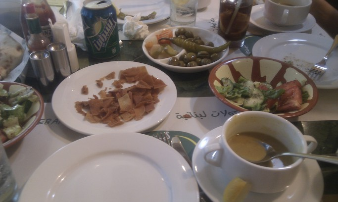
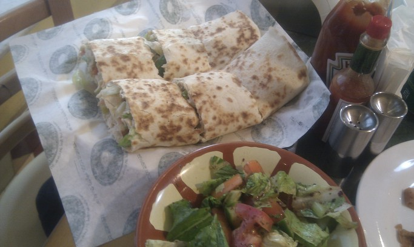
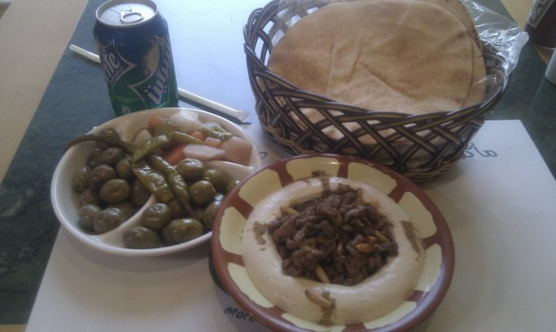
(마지막 사진에서 오른쪽 아래의 고기를 둘러싼 허연 것은 hommus하고 하던데, 콩으로 만든 거라든가... 크림 맛이 나더군요.)
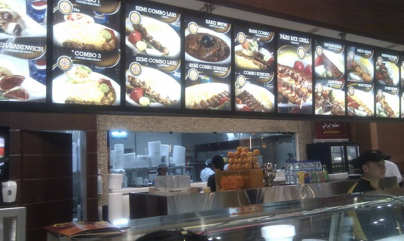
(중동의 흔한 푸드 코트)
그런 레바논 음식의 특징 중 하나가, 소금에 절인 피클을 많이 먹는다는 것인데, 우리 김치와 비교할 수 있는 식품입니다. 종류도 많습니다. 다만 고추가루는 물론 쓰지 않았고, 오로지 소금으로만 절인 것 같은데, 김치와는 비교도 안될 정도로 짭니다. 대체 이걸 어찌 먹으란 말인가 싶을 정도로 짭니다. 근데 이곳에서는 나름 인기가 있는지 카르푸 같은 곳에서 우리 김치를 팔 듯이 여기서는 레바논 피클을 팝니다.
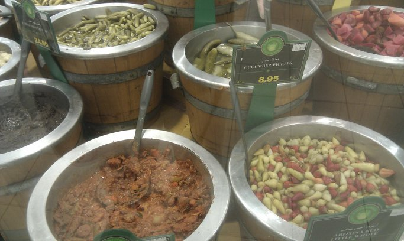
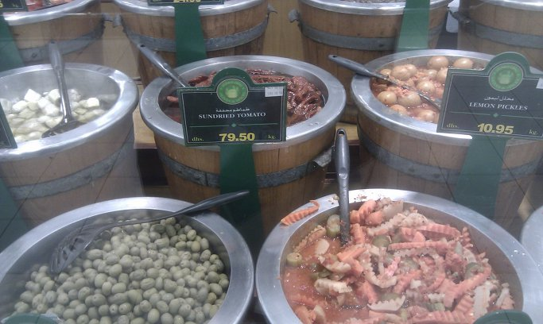
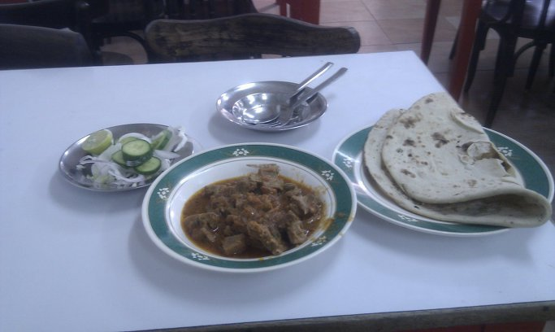
(이건 전통 시장에 들렀다 사먹은 정말 인도인들이 만들고 인도인들이 사먹는 허름한 인도식당에서 먹은 양고기 카레. 보기엔 저래도 싸고 맛있었습니다.)
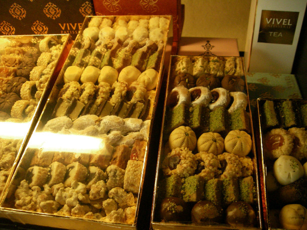
(이건 지나가다 찍은 제과점의 레바논-시리아의 전통 과자들입니다. 원래 이쪽 지방의 과자류가 매우 유명하더군요. 대표적인 것이 터키의 Turkish Delight이지요. 저 사진 속의 과자 상자들은 너무 비싸서 - 약 5만원 - 못 샀습니다. 나중에 식당에서 한조각 먹어봤는데, 정말 달고 맛있었습니다. 저거 못 사온 것이 지금도 원통합니다. 돈 아껴서 뭐하겠다고...)
3. 화장실
공항에 내렸을 때 화장실가보고 가장 인상깊었던 것이 바로 화장실 변기마다 샤워기 같은 것이 달려 있다는 것입니다. 중동 지방 사람들의 뒤처리 방식 대충 아시지요 ? 물론 휴지도 다 있긴 합니다. 호텔 화장실에도 따로 비데도 아닌 것이... 아무튼 물로 뒤처리를 할 수 있는 변기도 아니고 세면기도 아닌 그런 것이 따로 준비되어 있습니다. 좀 망측하긴 하지만, 써보면 아주 위생적이고 편리하다는 것을 아실 수 있습니다. 사실 종이만으로 뒤처리한다는 것은 매우 불완전하고 찝찝한 거에요.
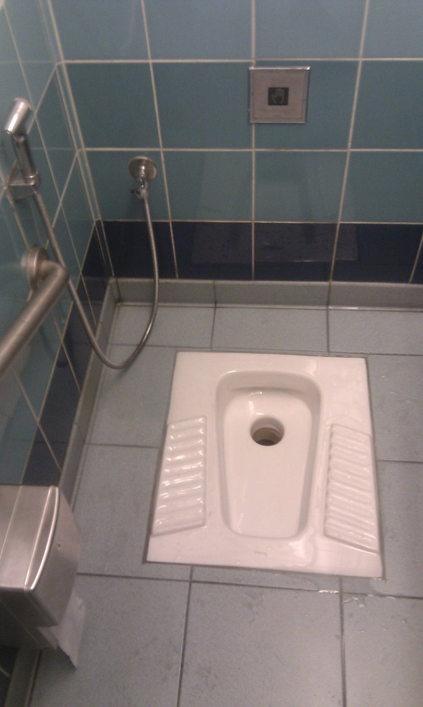
4. 날씨
당연히 안좋습니다 !!! 뭘 기대하셨습니까 ? 아침에도 밖에 나가면 아주 확 후덥지근합니다 한 35도? 휴일날 대중교통 수단으로 돌아다녀 보니까, 가끔씩 정말 숨이 약간 막힐 정도로 덥더군요. 저녁에 호텔에 돌아와보니, 제 회색 티셔츠에 소금이 맺혀 있을 정도입니다. 귀차니즘을 무릅쓰고 호텔 앞의 바닷가에 나가보았는데, 바닷물 온도가 미지근한 목욕탕 온도에요 T T 여기에는 정말 놀랐습니다. 사무실에 있는 화장실에는 수도꼭지가 찬물/더운물 2개가 아니라 1개뿐인데, 틀어보면 매우 따뜻한 물이 나옵니다. 옥상의 물탱크에서 햇빛에 덥혀진 물이 나오는 것인가 봅니다. 한번 해수욕장에도 가봤는데, 깜짝 놀랐습니다. 바닷물도 온탕처럼 따뜻하더군요.
더운 건 당연하고, 바닷가라서 그런지 의외로 습합니다. 물론 장마철의 한국처럼 습하지는 않지만, 예, 습합니다. 두바이는 사막에 녹지를 좀 만들어 보겠다고 바닷물을 정제하여 엄청난 양의 물을 시내의 잔디와 숲에 뿌리고 있습니다. 도시 단위로는 세계에서 가장 물을 많이 쓴다고 하더군요.
그리고 대기는 좀 뿌옇습니다. 역시 사막인지라 모래 먼지가 대기 중에 많나 봅니다.
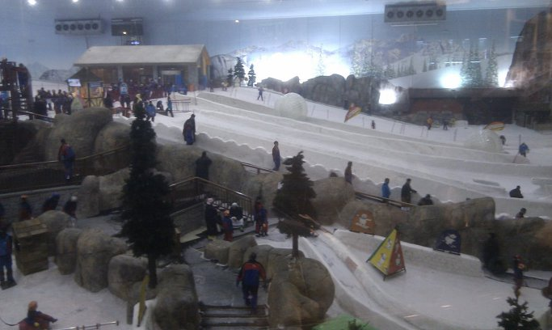
(두바이가 자랑하는 돈질의 결정판 실내 스키장)
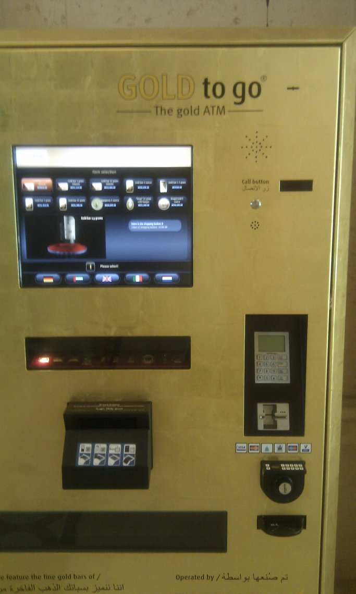
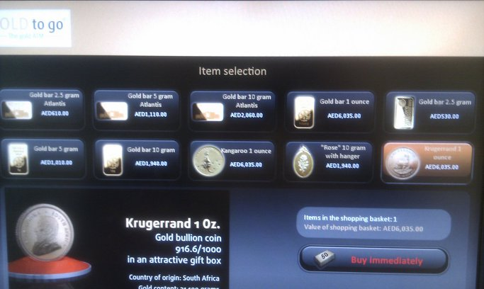
(두바이가 자랑하는 두바이에만 있다는 그것... 금괴 자판기)
5. 두바이의 어두운 면
주말에는 전에 봐둔 버스를 타고 골드 숙 (금 시장)이라는 곳으로 가보기로 했습니다. 근데 버스를 타니까, 이건 저조차도 '아 ㅆㅂ 잘못 탔나' 싶을 정도로 분위기가... 좀 안 좋았습니다. 노동자 분위기의 시커면 인도/파키 아저씨들만 잔뜩 탄 거에요. 근데 겉모습만 좀 그렇고 착한 아저씨들 같아요. 물론 안전하게 종점까지 갔었어요.
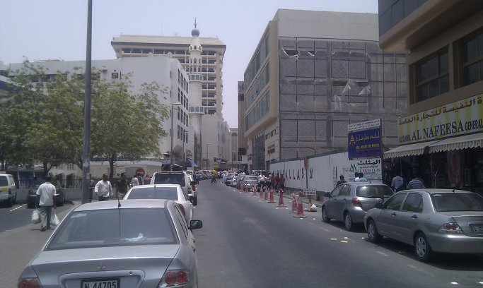
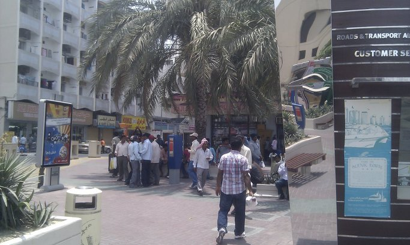
종점은 우리나라로 따지면 안산 (안산 사시는 분들께는 죄송) 같은 곳이었나 봐요. 내리니까, 그곳은 진짜 인도나 파키스탄 같더군요. 사람들도 모조리 그쪽 계열이고, 식당도 다 그렇고, 분위기는 우리 남대문 시장 비슷해보였습니다. 바로 근처에 두바이 강(Dubai creek)이 있었는데, 그 강가 쉼터에는 휴일에 할 일도 없고 갈 곳도 없는 노동계층의 인도/파키 아저씨들이 그 찌는 듯한 더위 속에 그냥 모여 앉아 있더군요. 제가 묵던 호텔 근처와는 무척... 분위기가 달랐습니다.
두바이 인구의 80%는 정말 외국인라고 합니다. 20%만 두바이 국민들인데, 이들은 정말 진골 대접을 받는다고 합니다. 일단 세금 전혀 없고요 (이건 외국인도 마찬가지 !!), 집 공짜로 나오고요, 수도세 전기세 이런거 전혀 안낸답니다. (외국인은 내야 함) 심지어 자동차 휘발유도 대폭 할인된 가격에 살 수 있답니다. 최근까지는 외국인도 그랬는데, 이젠 외국인은 제대로 된 값을 내야 한대요. 그리고 두바이 국민이면 정부가 어떻게 해서든 직장을 구해준답니다. 그리고 그렇게 구한 직장에서, 두바이 국민들은 그냥 커피나 마시고 외국인들이 게으름 피우지 않는지 관리만 하면 된대요.
그게 좋은 일인지는 잘 모르겠습니다. 국민들을 편하게 해주는 것은 좋은데, 그래도 국가 경쟁력이라는 측면에서는 좀 문제가 있지 않나 싶습니다. 심지어 군대나 경찰도 오만 사람들을 주로 많이 쓴다는데, 글쎄요...
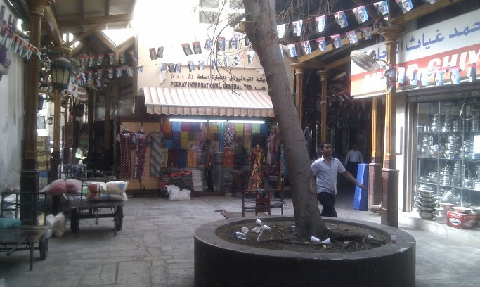
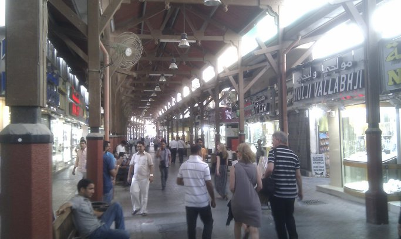
(여긴 전통 시장... 약간 돌아다녀보니, 확실히 고급 쇼핑 몰보다는 이런 전통시장이 관광객 유치에 더 좋다는 것을 느끼겠습니다.)
쇼핑 몰에 가보니 두바이 국민들은 눈에 많이 띕니다. (전통 복장들 때문에... 얼굴로는 잘 구분이 아직 안가요.) 그런데, 교보 문고 저리 가라 할 정도의 대형 서점들에 들어가보면, 거기에는 일단 아랍어로 된 책이 거의 없고 다 영어책들이고, 또 두바이 현지인들은 거의 없고 유럽 계통 손님들만 눈에 띕니다. 이건 확실히 문제가 있다고 봐요.
6. 여성들의 복장
니캅이던가... 암튼 전통 아랍식으로 머리부터 발끝까지 모조리 검은 천으로 둘러싼 여성들이 두바이 여성들입니다. 이렇게 더운 날씨에 저렇게 입고도 괜찮을까 싶은데, 괜찮은가 봅니다. 다만, 어떤 여자들은 정말 눈만 내놓고 다니는데, 어떤 여자들은 얼굴은 내놓고 다니더라고요. 심지어 어떤 여자들은 눈도 안내놓고 다닙니다. (눈 부분은 얇은 검은 천으로 가려서, 안에서는 밖이 보이나봐요.) 그 차이점이 뭔지 궁금했는데, 물론 아직 모르겠어요. 아마 좀더 가릴 수록 뼈대있는 가문이거나, 뭐 그런가 보지요 ? 보면 어떤 여자는 흰 천으로 머리만 가리고 있고 (그건 주로 인도네시아 여자들 같아요) 어떤 여자는 심지어 분홍색으로 머리만 감싸고 있던데 (얼굴은 중동 계통이던데... 레바논이나 시리아 여자인가 ?) 그런 사람들은 두바이가 아닌, 외국 여자들이거나 뼈대 없는 가문의 여자들인 모양입니다.
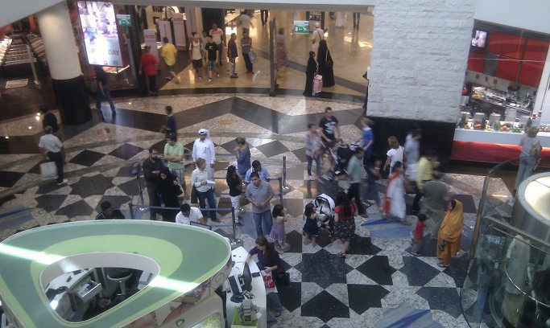
(두바이의 흔한 대형 몰의 한 장면)
그렇게 눈만 내놓고 다니는 여성들은 음식점에서 음식 먹을때는 어떻게 할까요 ? 간단하더군요. 그냥 얼굴 가렸던 베일을 벗고, 얼굴을 내놓고 먹더라구요.
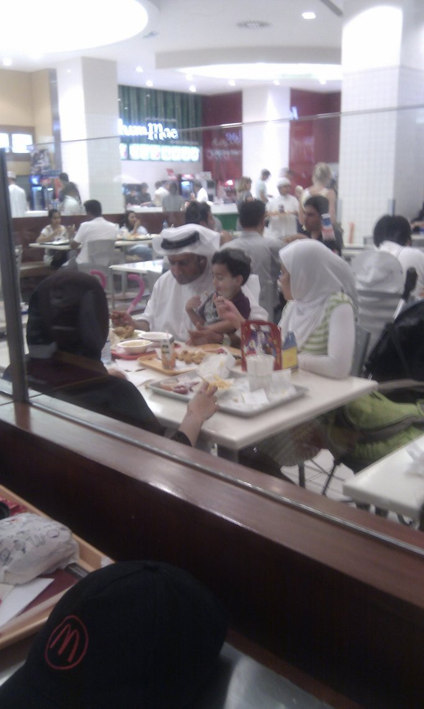
(저렇게 검은 차도르 다 뒤집어 쓴 여자는 진골 두바이 시민이고, 흰 히잡만 쓴 여자는 아마 인도네시아 등에서 온 외국 '이모님' 인가봐요.)
저런 니캅 차림의 여성들은 니캅 밑에 어떤 옷을 입고 있을까요 ? 한번은 바람이 날려 니캅이 휘날리는 바람에 본의아니게 그 밑의 옷차림을 보게 되었는데, 그냥 나이키 운동화에 청바지 차림이더군요.
여자아이들은 그냥 서방 아이들처럼 편한 복장으로 돌아다닙니다. 12살인가 13살인가까지는 그게 허용이 되는데, 그 나이가 넘어가면 무조건 저렇게 외출할 때는 다 뒤집어 써야 한대요. 그런 여자 아이들보면 아주 예쁘게 생겼습니다. 코도 오똑하고 눈도 크고요. 그런데 일정 나이가 되면 그 검은 옷 속으로 들어가야 한다고 하니, 좀 슬프네요. 본인들은 어떻게 생각할까요 ? 뭐 알 수 없죠. 하긴 우리나라 여성들도, 젊어서는 자유분방하게 지내다가, 혹시 '뼈대있는' 가문에 들어가면 최소한 신혼초에 시집에 갈 때는 답답한 한복 입어야 하쟎아요 ? 뭐 그런것과 비슷하겠지요.
한번은 히잡인지 차도르인지를 눈만 드러낸채 머리부터 발끝까지 쓴 여자들 10여명이, 길가던 저에게 단체 사진을 찍어달라고 부탁을 하는데, 찍어주는 저도 'Smile ~' 하면서 셔터를 누르는데 정말 웃겼습니다. 대체 나중에 누가 누구인지 어떻게들 알아볼런지 ??
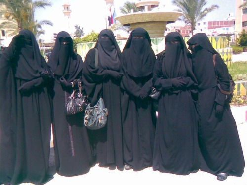
(이건 제가 찍은 사진이 아니라 구글링에서 niqab group photo라는 키워드로 검색한 결과입니다.)